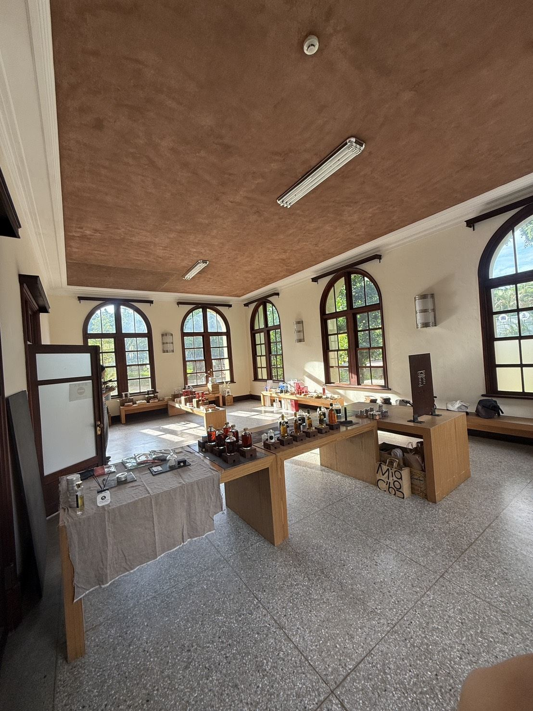
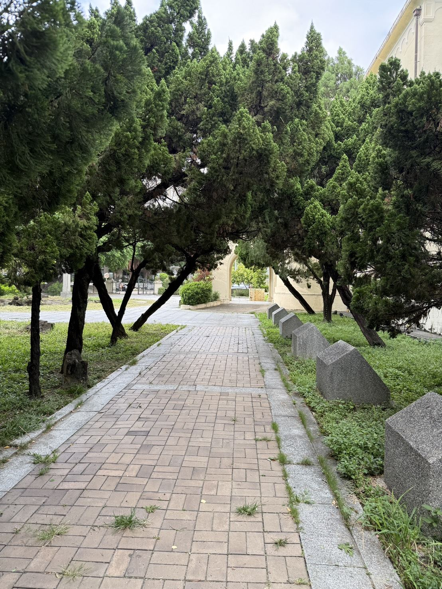
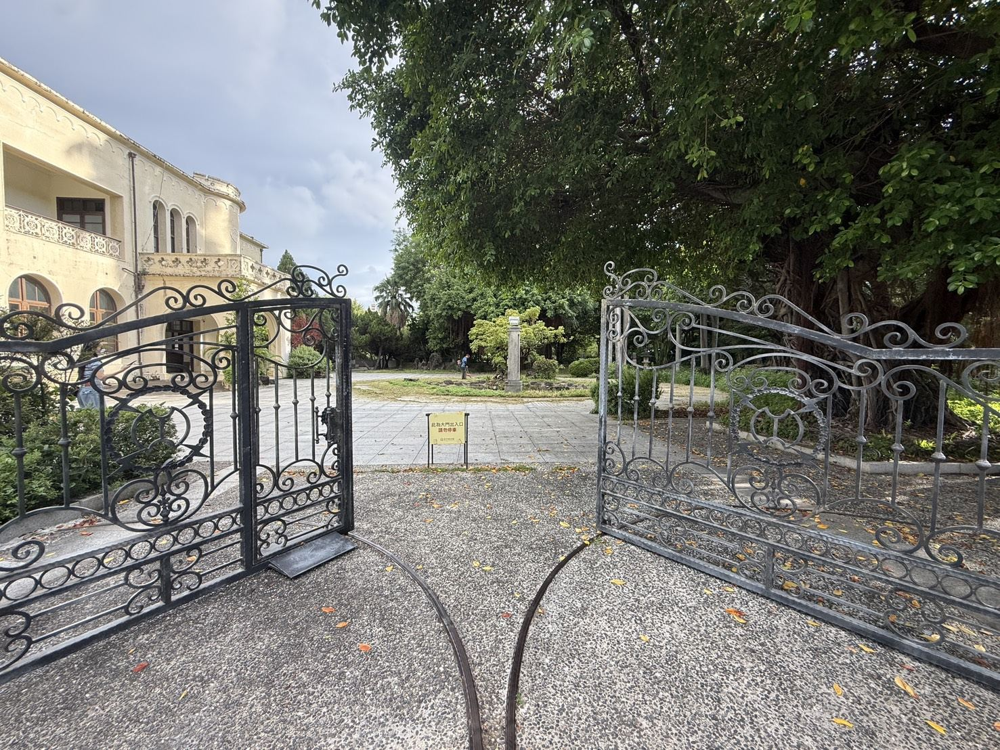
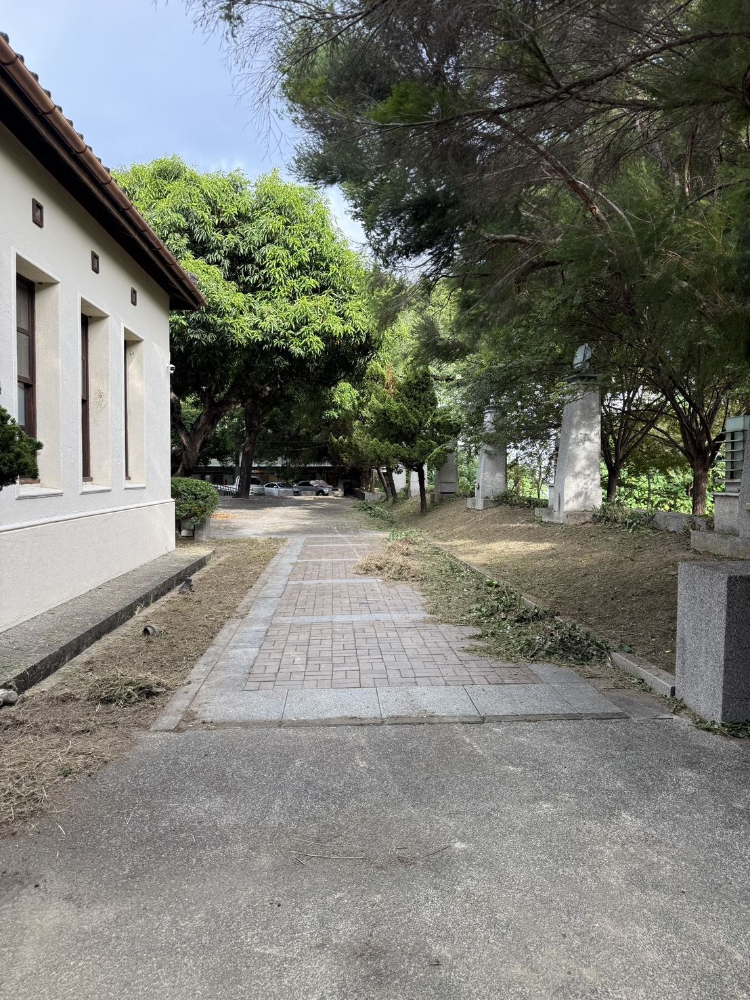

02 · 打卡點
十個一定要拍的角落
Ten Photo Spots
昭和摩登、復古文青、光影與廣播情懷都在這座園區裡。點開每個角落，看它的故事，照著示範打卡照拍一張。
#RadioOneOnAir
社群投稿牆
拍好了嗎？標記官方帳號與 #RadioOneOnAir，精選照片會輪播在這裡。


你的照片
可能出現在這裡
可能出現在這裡

#RadioOneOnAir
目前為官方拍攝照片。標記 #RadioOneOnAir 並同意授權，精選投稿將輪播於此。